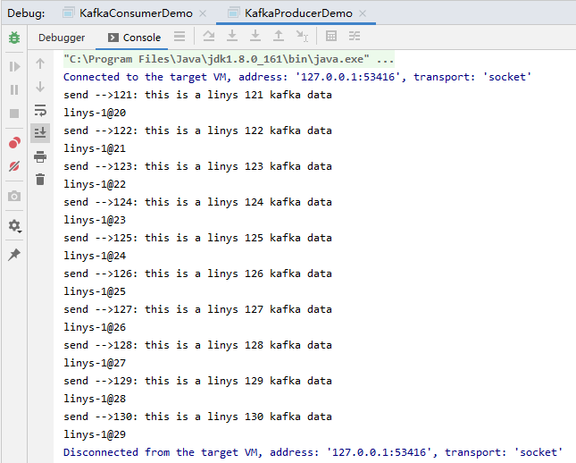
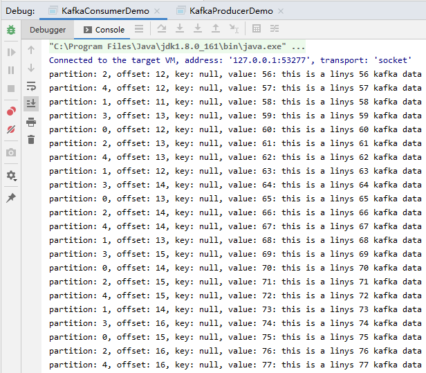

Kafka是apache开源的一款用Scala编写的消息队列中间件，具有高吞吐量，低延时等特性。
Kafka对消息保存时根据Topic进行归类，发送消息者称为Producer,消息接受者称为Consumer,此外kafka集群有多个kafka实例组成，每个实例(server)称为broker。
无论是kafka集群，还是producer和consumer都依赖于zookeeper集群保存一些meta信息，来保证系统可用性。
Producer：消息生产者，就是向kafka broker发消息的客户端。
Consumer：消息消费者，向kafka broker取消息的客户端
Topic ：我们可以理解为一个队列，消息根据Topic进行归类。
Consumer Group （CG）：这是kafka用来实现一个topic消息的广播（发给所有的consumer）和单播（发给任意一个consumer）的手段。一个topic可以对应多个CG。topic的消息会复制（不是真的复制，是概念上的）到所有的CG，但每个partion只会把消息发给该CG中的一个consumer。如果需要实现广播，只要每个consumer有一个独立的CG就可以了。用CG还可以将consumer进行自由的分组而不需要多次发送消息到不同的topic。
Broker ：一台kafka服务器就是一个broker。一个集群由多个broker组成。一个broker可以容纳多个topic。
partiton中文件存储方式
partiton中segment文件存储结构
在partition中通过offset查找message
pom.xml添加依赖
<dependency>
<groupId>org.apache.kafka</groupId>
<artifactId>kafka_2.11</artifactId>
<version>1.1.0</version>
</dependency>
<dependency>
<groupId>org.apache.kafka</groupId>
<artifactId>kafka-clients</artifactId>
<version>1.1.0</version>
</dependency>生产者：
package com.linys.scala.KAFKA_producer
import java.util.Properties
import org.apache.kafka.clients.producer.{KafkaProducer, ProducerRecord, RecordMetadata}
/**
* 实现producer
*/
object KafkaProducerDemo {
def main(args: Array[String]): Unit = {
val prop = new Properties
// 指定请求的kafka集群列表
prop.put("bootstrap.servers", "essum:9092")// 指定响应方式
//prop.put("acks", "0")
prop.put("acks", "all")
// 请求失败重试次数
//prop.put("retries", "3")
// 指定key的序列化方式, key是用于存放数据对应的offset
prop.put("key.serializer", "org.apache.kafka.common.serialization.StringSerializer")
// 指定value的序列化方式
prop.put("value.serializer", "org.apache.kafka.common.serialization.StringSerializer")
// 配置超时时间
prop.put("request.timeout.ms", "60000")
//prop.put("batch.size", "16384")
//prop.put("linger.ms", "1")
//prop.put("buffer.memory", "33554432")
// 得到生产者的实例
val producer = new KafkaProducer[String, String](prop)
// 模拟一些数据并发送给kafka
for (i <- 1 to 100) {
val msg = s"${i}: this is a linys ${i} kafka data"
println("send -->" + msg)
// 得到返回值
val rmd: RecordMetadata = producer.send(new ProducerRecord[String, String]("linys", msg)).get()
println(rmd.toString)
Thread.sleep(500)
}
producer.close()
}
}消费者：
package com.linys.scala.KAFKA_consumer
import java.util.{Collections, Properties}
import org.apache.kafka.clients.consumer.{ConsumerRecords, KafkaConsumer}
/**
* 实现consumer
*/
object KafkaConsumerDemo {
def main(args: Array[String]): Unit = {
// 配置信息
val prop = new Properties
prop.put("bootstrap.servers", "essum:9092")
// 指定消费者组
prop.put("group.id", "group01")
// 指定消费位置: earliest/latest/none
prop.put("auto.offset.reset", "earliest")
// 指定消费的key的反序列化方式
prop.put("key.deserializer", "org.apache.kafka.common.serialization.StringDeserializer")
// 指定消费的value的反序列化方式
prop.put("value.deserializer", "org.apache.kafka.common.serialization.StringDeserializer")
prop.put("enable.auto.commit", "true")
prop.put("session.timeout.ms", "30000")
// 得到Consumer实例
val kafkaConsumer = new KafkaConsumer[String, String](prop)
// 首先需要订阅topic
kafkaConsumer.subscribe(Collections.singletonList("linys"))
// 开始消费数据
while (true) {
// 如果Kafak中没有消息，会隔timeout这个值读一次。比如上面代码设置了2秒，也是就2秒后会查一次。
// 如果Kafka中还有消息没有消费的话，会马上去读，而不需要等待。
val msgs: ConsumerRecords[String, String] = kafkaConsumer.poll(2000)
// println(msgs.count())
val it = msgs.iterator()
while (it.hasNext) {
val msg = it.next()
println(s"partition: ${msg.partition()}, offset: ${msg.offset()}, key: ${msg.key()}, value: ${msg.value()}")
}
}
}
}执行输出：


生产者配置参数解释：
bootstrap.servers： kafka集群broker的地址
key.serializer：关键字的序列化方式
value.serializer：消息值的序列化方式
acks：指定必须要有多少个分区的副本接收到该消息，服务端才会向生产者发送响应，可选值为：0,1,2，…，all，如果设置为0，producter就只管发出不管kafka server有没有确认收到。设置all则表示kafka所有的分区副本全部确认接收到才返回。
buffer.memory：生产者的内存缓冲区大小。如果生产者发送消息的速度 > 消息发送到kafka的速度，那么消息就会在缓冲区堆积，导致缓冲区不足。这个时候，send()方法要么阻塞，要么抛出异常。
max.block.ms：表示send()方法在抛出异常之前可以阻塞多久的时间，默认是60s
compression.type：消息在发往kafka之前可以进行压缩处理，以此来降低存储开销和网络带宽。默认值是null，可选的压缩算法有snappy、gzip和lz4
retries：生产者向kafka发送消息可能会发生错误，有的是临时性的错误，比如网络突然阻塞了一会儿，有的不是临时的错误，比如“消息太大了”，对于出现的临时错误，可以通过重试机制来重新发送
retry.backoff.ms：每次重试之间间隔的时间，第一次失败了，那么休息一会再重试，休息多久，可以通过这个参数来调节
batch.size：生产者在发送消息时，可以将即将发往同一个分区的消息放在一个批次里，然后将这个批次整体进行发送，这样可以节约网络带宽，提升性能。该参数就是用来规约一个批次的大小的。但是生产者并不是说要等到一个批次装满之后，才会发送，不是这样的，有时候半满，甚至只有一个消息的时候，也可能会发送，具体怎么选择，我们不知道，但是不是说非要等装满才发。因此，如果把该参数调的比较大的话，是不会造成消息发送延迟的，但是会占用比较大的内存。但是如果设置的太小，会造成消息发送次数增加，会有额外的IO开销
linger.ms：生产者在发送一个批次之前，可以适当的等一小会，这样可以让更多的消息加入到该批次。这样会造成延时增加，但是降低了IO开销，增加了吞吐量
client.id：服务器用来标志消息的来源，是一个任意的字符串
max.in.flight.requests.per.connection：一个消息发送给kafka集群，在收到服务端的响应之前的这段时间里，生产者还可以发n-1个消息。这个参数配置retries，可以保证消息的顺序，后面会介绍
request.timeout.ms：生产者在发送消息之后，到收到服务端响应时，等待的时间限制
max.request.size：生产者发送消息的大小。可以是一个消息的大小，也可以发送的一个批次的消息大小
receive.buffer.bytes和send.buffer.bytes：tcp socket接收和发送消息的缓冲区大小，其实指的就是ByteBuffer的大小
消费者配置参数解释：
groupid：一个字符串用来指示一组consumer所在的组群。实现同一个topic可由不同的组群消费
auto.offset.reset：可选三个参数
earliest ---当各分区下有已提交的offset时，从提交的offset开始消费；无提交的offset时，从头开始消费
latest---当各分区下有已提交的offset时，从提交的offset开始消费；无提交的offset时，消费新产生的该分区下的数据
none---topic各分区都存在已提交的offset时，从offset后开始消费；只要有一个分区不存在已提交的offset，则抛出异常
socket.timeout.ms：默认值：3000，socket超时时间。
socket.buffersize： 默认值：64*1024，socket receive buffer。
fetch.size： 默认值：300 * 1024，控制在一个请求中获取的消息的字节数。 这个参数在0.8.x中由fetch.message.max.bytes,fetch.min.bytes取代。
backoff.increment.ms：默认值：1000，这个参数避免在没有新数据的情况下重复频繁的拉数据。 如果拉到空数据，则多推后这个时间。
queued.max.message.chunks：默认值：2，consumer内部缓存拉回来的消息到一个队列中。 这个值控制这个队列的大小。
auto.commit.enable：默认值：true，如果true,consumer定期地往zookeeper写入每个分区的offset。
auto.commit.interval.ms：默认值：10000，往zookeeper上写offset的频率。
auto.offset.reset：默认值：largest，如果offset出了返回，则 smallest: 自动设置reset到最小的offset. largest : 自动设置offset到最大的offset. 其它值不允许，会抛出异常。
consumer.timeout.ms：默认值：-1，默认-1,consumer在没有新消息时无限期的block。如果设置一个正值， 一个超时异常会抛出。
rebalance.retries.max：默认值：4，rebalance时的最大尝试次数。
max.poll.interval.ms：拉取的最大时间间隔，如果你一次拉取的比较多，建议加大这个值，长时间没有调用poll，且间隔超过这个值时，就会认为这个consumer失败了
max.poll.records：默认值：500，Consumer每次调用poll()时取到的records的最大数。